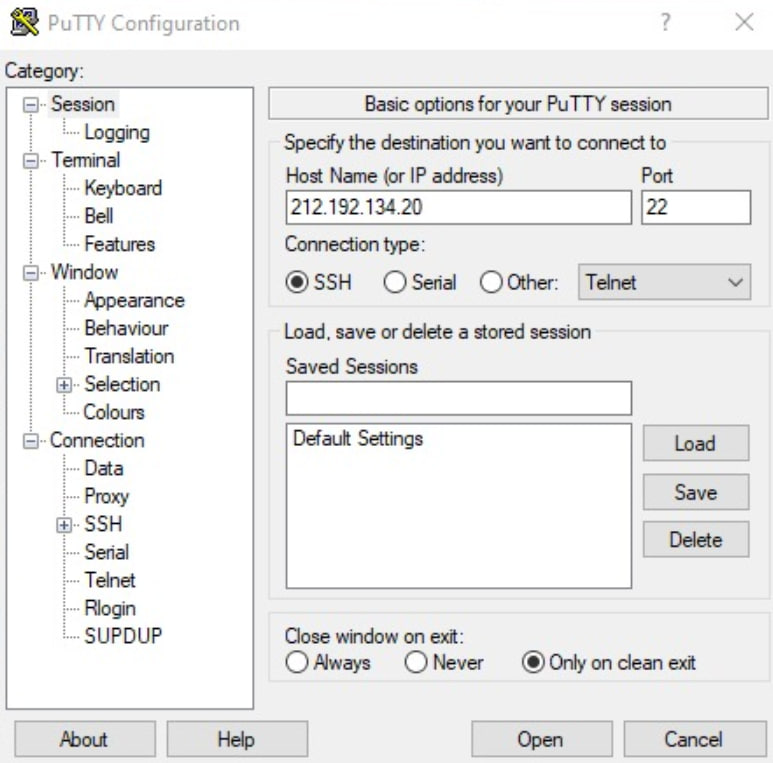
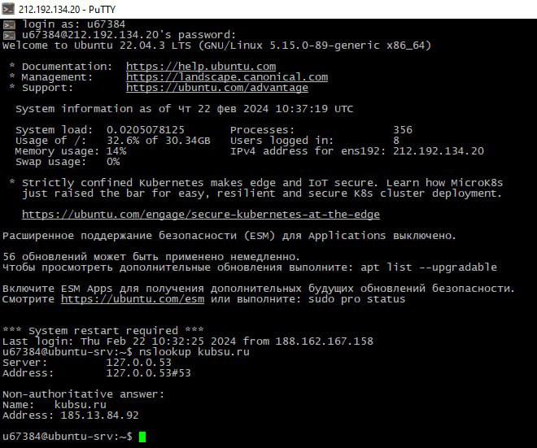
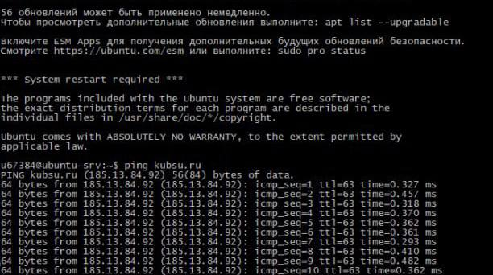
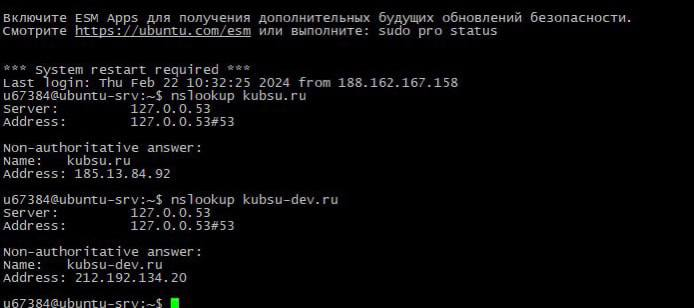
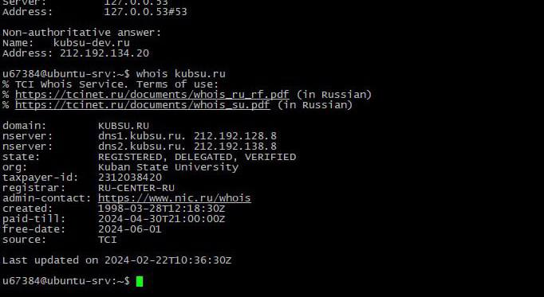
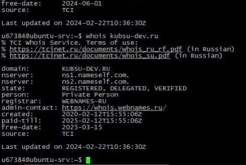

1. Подключение к серверу.
Получили через сообщения в Moodle логин и пароль доступа к учебному серверу.
Подключимся к нашему серверу с помощью программы PuTTY через ssh ключ
Putty.exe, команды ssh.

2. IP-адрес веб сервера
С помощью команды ping на учебном сервере узнали IP-адрес веб-сервера kubsu.ru.

3. Введем команду nslookup kubsu.ru и nslookup kubsu-dev.ru.

4.Введем в команду whois kubsu.ru и whois kubsu-dev.ru.


5.Создаем и получаем ssh ключ.

6. подключаем наш ssh ключ к репозиторию github

7. Скопируем репозиторий на наш сервер с помощью команды git clone
8. Скачаем файлы на свой компьютер с помощью Filezilla